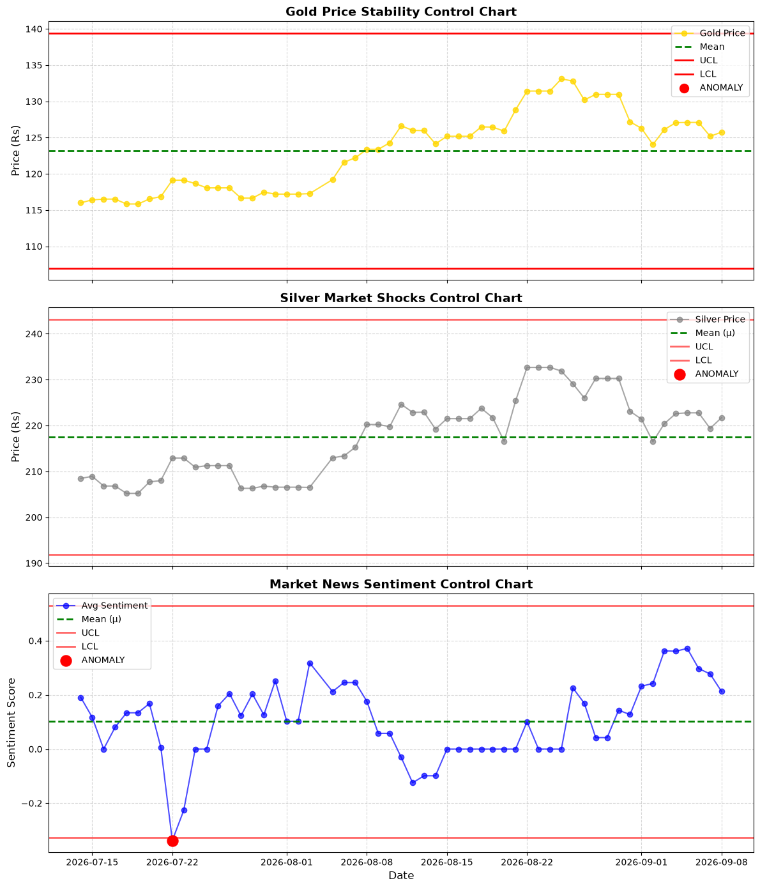

Market Sentiment Tracker (Automated)
Live Data Refreshed: 15 July 2026, 06:29 PM
Executive Summary
ALL CLEAR: Both Gold and Silver are trading smoothly within expected statistical control limits.
| Metric / Asset |
Current Value |
Mean |
LCL |
UCL |
Status |
| Gold ETF (Rs) |
116.41 |
116.2 |
115.34 |
117.07 |
🟢 NORMAL |
| Silver ETF (Rs) |
208.92 |
208.69 |
207.71 |
209.67 |
🟢 NORMAL |
| Banking News Sentiment |
0.137 |
0.164 |
0.0496 |
0.2785 |
🟢 NORMAL |
Statistical Variance Visualization by SQC
